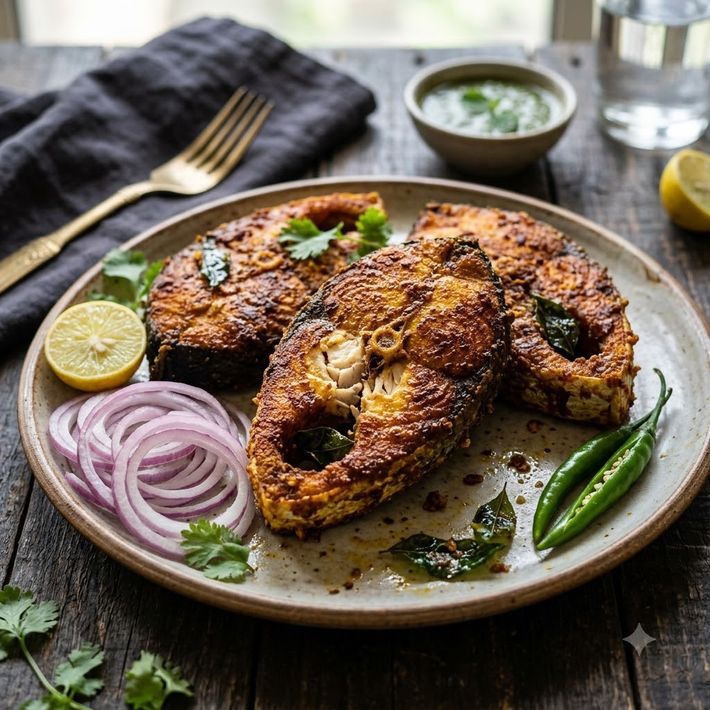

Airfryer – Marinate 20 min + Fry 200°C 14 min — Serves 4
Prep ahead: Marinate the fish for at least 20 minutes before frying.
Ingredients
Method
Tip: Catla has more bone than rohu around the belly — cutting it into steaks rather than fillets makes it easier to fry evenly and eat safely.